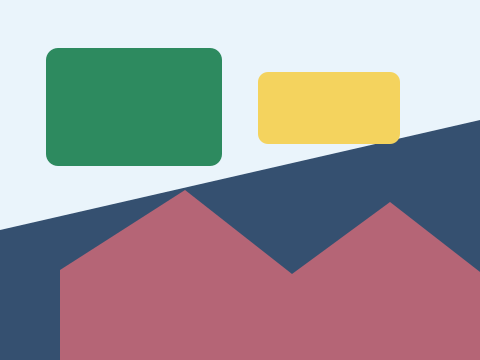

Exemplo

Código base
<div class="exemplo">
<picture class="imagem-rwd"><source media="(max-width: 520px)" srcset="../assets/galeria-projeto-2.svg"><img src="../assets/galeria-projeto-1.svg" alt="Arte responsiva escolhida conforme a largura da tela"></picture>
</div>
<style>
/* GUIA DA ATIVIDADE: Crie uma imagem fluida e use picture ou srcset para oferecer uma alternativa em telas pequenas. Comece pela declaração width indicada abaixo. Salve e compare o antes e o depois. */
.imagem-rwd { display: block; /* altere esta declaração e observe o efeito */ max-width: 720px; margin: auto; }
.imagem-rwd img { display: block; width: 100%; height: auto; border-radius: 10px; }
</style>Atividade prática
Crie uma imagem fluida e use picture ou srcset para oferecer uma alternativa em telas pequenas.
- Abra esta página no navegador.
- Edite o CSS no arquivo ou no DevTools.
- Anote qual propriedade mudou o resultado visual.